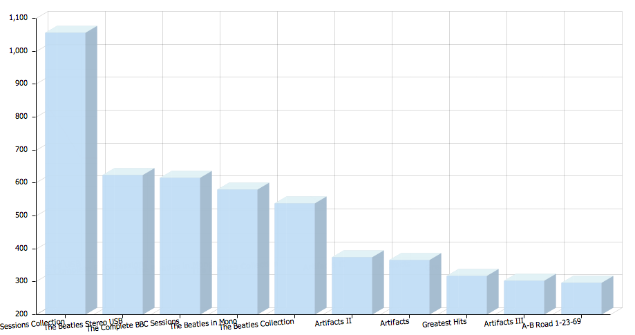

Visualization techniques can be classified according to the type of analytical task that the user is attempting to perform on the data. Visualization techniques such as pie charts are appropriate for comparing the attributes or values of different variables within the dataset. If the user wants to analyse relationships and hierarchies then graphs and other related techniques can be used. The analysis of data in time or space can be supported with timelines and maps. A scatter plot can be used to analyse three-dimensional data. Higher dimensional data can be visualised using techniques such as radar charts. The following subsections will describe in more detail a range of example visualization techniques and how they can be used.
Figure 6: Visualization techniques appropriate for different data analysis tasks.
The most appropriate visualization for comparing attributes or values will depend on the nature of the data and the task. To compare absolute values (such as total number of sales) associated with a list of items (such as different albums) then a bar chart would be appropriate. If only relative rather than absolute values were of interest then a pie chart could be used. For bar charts and pie charts, the items associated with value (e.g. albums) do not necessarily have any predefined order or position in the chart. If the items do have a pre-define order (for example the release date of the albums) a line chart can be used to show the trend. Finally, frequency distributions for an ordered variable can be visualised using a histogram. This could be used for example to plot the frequency of tracks of varying lengths.

Figure 7: Visualizations for comparing attributes or values. Top left: Using a bar chart to compare values across a set of categories [1]. Top right: Using a pie chart to compare proportions [4]. Bottom left: Using a line chart to visualise a series of data points against an ordered set of points on the x-axis [6]. Bottom right: Using a histogram to visualise frequency distribution [4].
Relationships between nodes can be visualised using a standard graph notation in which relationships are represented as lines. Graphs data can also be visualized using an arc diagram in which the nodes are organised linearly. Relationships between nodes are represented as half circles connecting the two nodes. When using an adjacency matrix, the nodes of the graph and placed on both the x-axis and y-axis. Relationships between the nodes are represented as entries in the grid.
Figure 8. Visualizing relationships using a graph (left), an arc diagram (middle) and adjacency matrix diagram (right) [4].
Some visualizations are specifically designed for hierarchical graph data. The indented tree is a familiar formalism commonly used for visualising hierarchies and navigating file directories. The node-link tree is a tree visualization in which the root node is placed in the centre. This provides a visual cue as to the population level of different sections of the hierarchy.
Figure 9: Visualizing hierarchies using an indented tree (right) and node-link tree (right) [4].
A number of space filling visualization techniques have been designed specifically to give an indication of the population level of different parts of the hierarchy. Treemaps visualise nodes within a hierarchy as a set of rectangles. Containment can be used to represent hierarchical relationships between nodes. The size of the rectangle is generally used to represent the number of individuals of a node (i.e. class) within the dataset. Colour can be used to represent some feature of the nodes (i.e. classes) such as the discrete set of superclasses to which they belong.
The icicle visualization can be used to show a node hierarchy and gives a clear indication of depth at different parts of the hierarchy. The sunburst essentially folds the icicle visualization into a circle. Similarly, the rose diagram uses the size of sectors to indicate the population of parts of the hierarchy. Finally, a circle-packing visualization uses containment to represent the hierarchy and size of the circle to represent containment.
Figure 10: Space filling visualization of a hierarchy using treemaps (left) and icicles (right) [4].
Figure 11: Space filling visualization of a hierarchy using sunburst (left), circle-packing (middle) and a rose diagram (right) [4].
Timeline visualizations can be used in combination with both discrete data where, for example, individual events are marked as dots on the timeline. Timelines can also be used to represent continuous data. For example, changes in the frequency of different types of event over time could be represented using colour to indicate event type and thickness of the band to indicate the frequency of those event types at that point in time.

Figure 12: Visualizing discrete [1] (left) and continuous [5] (right) data over time.
Data can also be associated with different types of map visualization. This could involve plotting coordinate points on the map. If the granularity of interest is areas (such as countries) rather than specific points in space, then a choropleth maps can be used. Colour can indicate some feature of the area such as the number of specific data points associated with it. The heat map of Beatles releases shown in figure 5 is an example of a choropleth map. If it is not necessary to indicate the borders between areas (such as country borders) then a Dorling cartogram can be used in which the centre of each circle falls within its associated area and both colour and size of the circle are used to visualize additional data.
Figure 13: Visualising data on a map [6] (left), choropleth map [1] (middle) and Dorling cartogram [4] (right).
Some visualizations can be used to represent data having 3 or more dimensions. Three-dimensional data can be represented using a scatter plot. As well as the x-axis and y-axis of the chart, the size of each dot placed on the scatter plot is used to represent a third dimension. Radar charts or parallel coordinates can be used to represent higher dimension data. In a radar (or star) chart, each multi-dimensional point is represented as a shape whose border connects each axis. The axes of a radar chart are represented as spokes of a wheel. In a parallel coordinates visualization, the axes correspond to vertical lines. A multi-dimensional point is show as a line connecting each axis.
Figure 14: Visualizing multidimensional data using a scatter plot (left) and radar or star chart (right) [4].
Figure 15: Visualizing multidimensional data using parallel coordinates [4].
Text-based visualizations use word size to represent frequency. In a standard tag cloud, words or phrases indicate tags or annotations that has been associated with resources. The larger the word, the more commonly it has been used to tag the resources. A variation on the standard tag clod is the phrase net visualization. This is often used to visualise a document or larger text corpus. Size reflects frequency of the word and also lines connect words that are in close proximity in the text.

Figure 16: Text-based visualization of a tag cloud [7] (left) and network of phrases [8] (right).